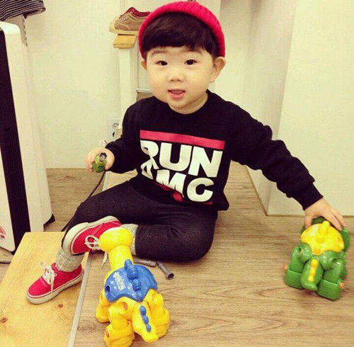
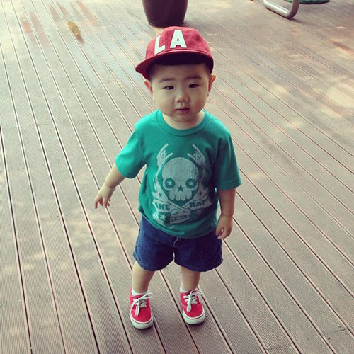
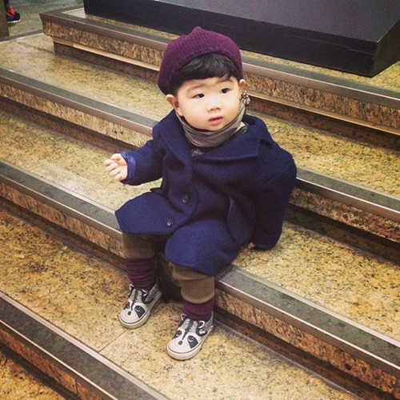
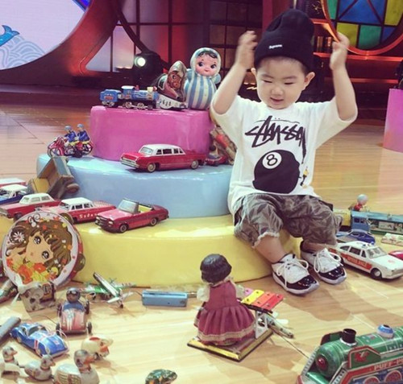

<!doctype html>
<html lang="en">
<head>
    <meta charset="UTF-8">
    <meta name="viewport"
          content="width=device-width, user-scalable=no, initial-scale=1.0, maximum-scale=1.0, minimum-scale=1.0">
    <meta http-equiv="X-UA-Compatible" content="ie=edge">
    <title>音乐相册</title>
    <link rel="stylesheet" href="../css/index.css">
    <link rel="stylesheet" href="">
</head>
<body>
    <!--<section id="section_box">-->
        <!---->
        <!---->
        <!---->
        <!---->
        <!---->
        <!---->
        <!---->
    <!--</section>-->
    <!--<script type="text/javascript">-->
        <!--//得到所有的page-->
        <!--var pages = document.querySelectorAll(".page");-->
        <!--//得到窗口的高度-->
        <!--var windowHeight = document.documentElement.clientHeight;-->

        <!--//所有page就位-->
        <!--for(var i = 1 ; i < pages.length ; i++){-->
        <!--pages[i].style.webkitTransform = "translateY(" + windowHeight + "px)";-->
        <!--}-->

        <!--//监听就是给document对象-->
        <!--document.addEventListener("touchstart", touchstartHandler, false);-->
        <!--document.addEventListener("touchmove", touchmoveHandler, false);-->
        <!--document.addEventListener("touchend", touchendHandler, false);-->


        <!--//开始滑动的手指位置-->
        <!--var startY;-->
        <!--//滑动的距离-->
        <!--var distanceY;-->

        <!--//三个相关的page-->
        <!--var idx = 0;-->
        <!--var prev = NaN;-->
        <!--var next = 1;-->

        <!--//函数截流-->
        <!--lock = true;-->

        <!--// 触摸开始-->
        <!--function touchstartHandler(event){-->
            <!--//开始值-->
            <!--startY = event.touches[0].clientY;-->

            <!--//去掉所有的过渡-->
            <!--pages[idx].style.transition = "none";-->
            <!--!isNaN(next) && (pages[next].style.transition = "none");-->
            <!--!isNaN(prev) && (pages[prev].style.transition = "none");-->

            <!--pages[idx].style.zIndex = 888;-->
            <!--!isNaN(next) && (pages[next].style.zIndex = 999);-->
            <!--!isNaN(prev) && (pages[prev].style.zIndex = 999);-->
        <!--}-->
        <!--// 触摸移动-->
        <!--function touchmoveHandler(event){-->
            <!--//y是手指的位置减去误差-->
            <!--distanceY = event.touches[0].clientY - startY;-->

            <!--//到头了-->
            <!--if(idx ==0  && distanceY > 0){-->
                <!--return;-->
            <!--}else if(idx ==6 && distanceY < 0){-->
                <!--return;-->
            <!--}-->


            <!--if(distanceY < 0){-->
                <!--//滑动的时候改变transform：-->
                <!--pages[idx].style.webkitTransform = "scale(" + (1 - Math.abs(distanceY) / windowHeight) + ")";-->
                <!--!isNaN(next) && (pages[next].style.webkitTransform = "scale(1) translateY(" + (windowHeight + distanceY) + "px)");-->
            <!--}else if(distanceY > 0){-->
                <!--pages[idx].style.webkitTransform = "scale(" + (1 - Math.abs(distanceY) / windowHeight) + ")";-->
                <!--!isNaN(prev) && (pages[prev].style.webkitTransform = "scale(1) translateY(" + (-windowHeight + distanceY) + "px)");-->
            <!--}-->
        <!--}-->
        <!--// 触摸结束-->
        <!--function touchendHandler(event){-->
            <!--//到头了-->
            <!--if(idx == 0 && distanceY > 0){-->
                <!--return;-->
            <!--}else if(idx == 5 && distanceY < 0){-->
                <!--return;-->
            <!--}-->

            <!--//根据distanceY来确定是否滑动成功-->
            <!--if(distanceY < -windowHeight / 4){-->
                <!--//向上滑动成功-->
                <!--console.log("↑")-->

                <!--//先改变信号量-->
                <!--prev = idx;-->
                <!--idx = next;-->
                <!--next++;-->
                <!--if(next > 6){-->
                    <!--idx = 6-->
                    <!--next = NaN;-->
                <!--}-->

                <!--console.log(prev,idx,next)-->

                <!--//加上过渡-->
                <!--!isNaN(prev) && (pages[prev].style.transition = "all 0.4s ease 0s");-->
                <!--pages[idx].style.transition = "all 0.4s ease 0s";-->

                <!--//最终的位置-->
                <!--pages[prev].style.webkitTransform = "scale(0)";-->
                <!--pages[idx].style.webkitTransform = "translateY(0px)";-->

            <!--}else if(distanceY > windowHeight / 4){-->
                <!--console.log("↓")-->

                <!--//先改变信号量-->
                <!--next = idx;-->
                <!--idx = prev;-->
                <!--prev&#45;&#45;;-->
                <!--if(prev < 0){-->
                    <!--idx = 0;-->
                    <!--prev = NaN;-->
                <!--}-->

                <!--console.log(prev,idx,next)-->

                <!--//加上过渡-->
                <!--!isNaN(next) && (pages[next].style.transition = "all 0.4s ease 0s");-->
                <!--pages[idx].style.transition = "all 0.4s ease 0s";-->

                <!--//最终的位置-->
                <!--pages[next].style.webkitTransform = "scale(0)";-->
                <!--pages[idx].style.webkitTransform = "translateY(0px)";-->
            <!--}else{-->
                <!--pages[idx].style.transition = "all 0.4s ease 0s";-->
                <!--!isNaN(prev) && (pages[prev].style.transition = "all 0.4s ease 0s");-->
                <!--!isNaN(next) && (pages[next].style.transition = "all 0.4s ease 0s");-->


                <!--pages[idx].style.webkitTransform = "scale(1)";-->
                <!--!isNaN(prev) && (pages[prev].style.webkitTransform = "translateY(" + -windowHeight + "px)");-->
                <!--!isNaN(next) && (pages[next].style.webkitTransform = "translateY(" + windowHeight + "px)");-->

            <!--}-->
            <!--inAnimate[idx]();-->
        <!--}-->
       <!--//入场动画-->
        <!--var inAnimate = [function(){},function(){},function(){},function(){},function(){},function(){}];-->

    <!--</script>-->

    <!--音乐开始-->
    <div id="btn">
        <embed src="../mp3/儿童歌曲-一只哈巴狗.mp3"></embed>
        <audio class="audioPlayer">
            <source src="../mp3/儿童歌曲-一只哈巴狗.mp3">
        </audio>
    </div>
    <!--<meter value="7" max="100" min="0"></meter>-->
    <!---->
    <!--<object data="mp3/儿童歌曲-一只哈巴狗.mp3" type=""></object>-->
    <!--<audio class="audioPlayer">-->
        <!--<source src="../mp3/儿童歌曲-一只哈巴狗.mp3">-->
    <!--</audio>-->

    <!--<button id="play">播放</button>-->
    <!--<button id="muted">静音</button>-->
    <!--<input type="number" id="volume" value="100" min="0" max="100">-->
    <script>
        var audioPlayer = document.querySelector(".audioPlayer");
        var btn = document.gitELementById("btn");
//        var playButton = document.getElementById("play");
//        var mutedButton = document.getElementById("muted");
//        var volumeButton = document.getElementById("volume");
        <!--playButton.onclick = function () {-->
            <!--if (this.innerText == "播放"){-->
                <!--this.innerText = "暂停";-->
                <!--audioPlayer.play();-->
                <!--console.log(audioPlayer.buffered);-->
            <!--}else {-->
                <!--this.innerText = "播放";-->
                <!--audioPlayer.pause();-->
                <!--console.log(audioPlayer.currentTime);-->
            <!--}-->
        <!--};-->
        <!--mutedButton.onclick = function () {-->
            <!--audioPlayer.muted = !audioPlayer.muted;-->
        <!--};-->
        <!--volumeButton.onchange = function () {-->
            <!--audioPlayer.volume = parseInt(this.value)/100;-->
        <!--};-->
        <!--audioPlayer.addEventListener("canplay",function (event) {-->
            <!--console.log(event,audioPlayer.duration);-->
        <!--});-->
    </script>
   <!--音乐结束-->
</body>
</html>